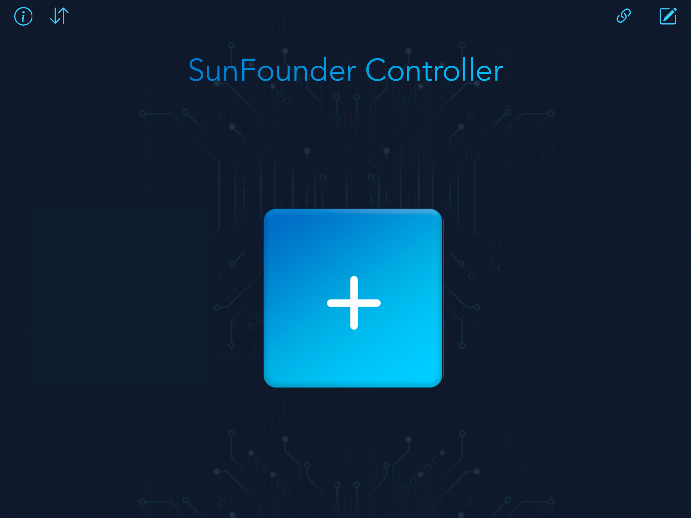
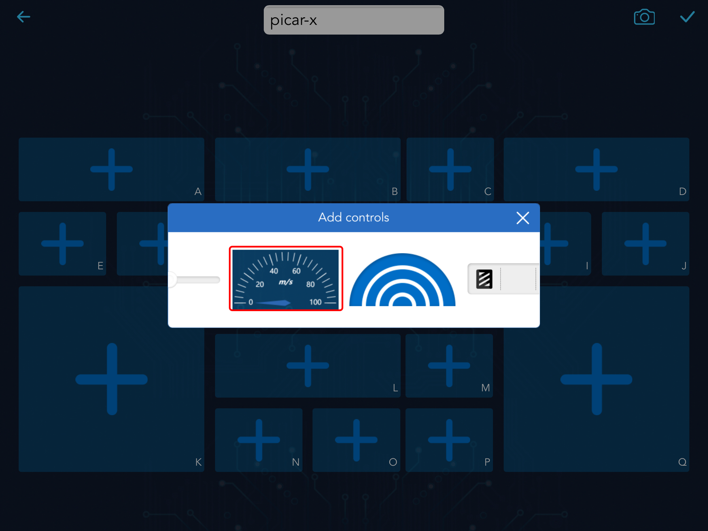
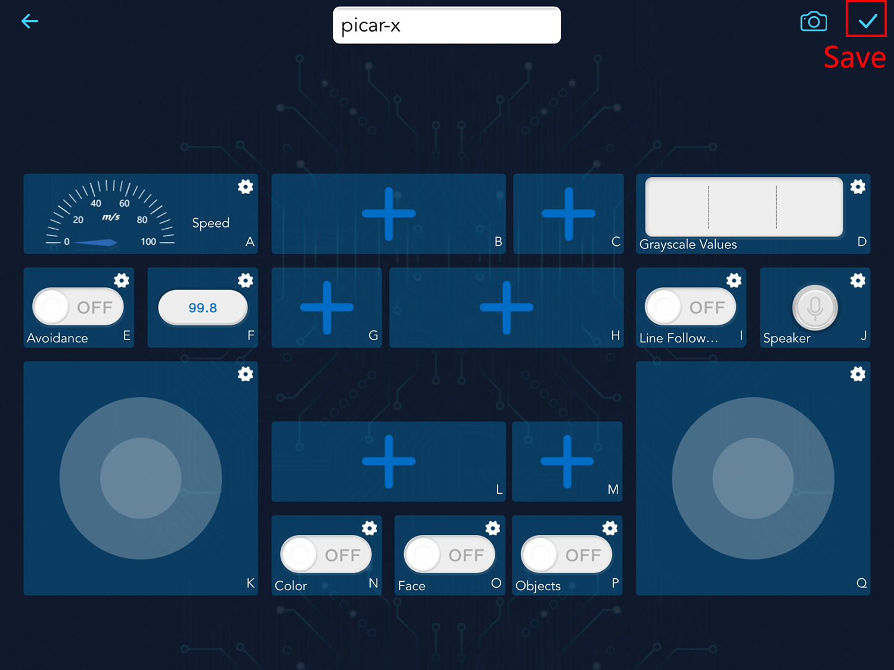

13. アプリによる制御¶
SunFounderコントローラーは、Raspberry Pi/Picoベースのロボットを制御するために使用されます。
このアプリには、ボタン、スイッチ、ジョイスティック、Dパッド、スライダー、スロットルスライダーウィジェット、デジタルディスプレイ、超音波レーダー、グレースケール検出、スピードメーター入力ウィジェットが統合されています。
A-Qまでの17エリアがあり、異なるウィジェットを配置して独自のコントローラーをカスタマイズできます。
さらに、このアプリケーションはライブビデオストリーミングサービスも提供しています。
このアプリを使用してPiCar-Xコントローラーをカスタマイズしましょう。
どうやって？
sunfounder-controllerモジュールをインストールします。最初に
robot-hat、vilib、picar-xモジュールをインストールする必要があります。詳細は： すべてのモジュールをインストールする（重要） を参照してください。cd ~ git clone https://github.com/sunfounder/sunfounder-controller.git cd ~/sunfounder-controller sudo python3 setup.py install
コードを実行します。
cd ~/picar-x/example sudo python3 app_control.py
APP Store(iOS) または Google Play(Android) から SunFounder Controller をインストールします。
アプリを開き、新しいコントローラーを作成します。
SunFounder Controllerアプリ内の+記号をクリックして新しいコントローラーを作成します。
名前を付け、コントローラータイプを選択します。プリセットセクションには、一部の製品のためのプリセットコントローラーがあり、必要に応じて使用できます。以下の手順に従って、独自のコントローラーをカスタマイズすることもできます。

このコントローラーに異なるウィジェットを追加します。
このコントローラー内の A-Q までの17の小エリアに、異なるタイプと形状のウィジェットを追加できます。

A エリアには、車の速度を表示する Speedometer ウィジェットを追加します。
Note
選択したウィジェットをクリックして、左にスワイプして Delete ボタンを見つけ、それをクリックすることで削除できます。

右上の Settings アイコンをクリックして、名前、最大値と最小値、単位を設定します。

D エリアの Grayscale Detection ウィジェットのために、現在の環境の
Line_RefとCliff_Refを設定します。
最後に、残りのウィジェットを追加し、右上のボタンをクリックして保存します。
PiCar-xに接続する。
Connect ボタンをクリックすると、近くのロボットを自動的に検索します。その名前は
picarx_control.pyで定義されており、常に実行されている必要があります。
製品名をクリックすると「接続成功」というメッセージが表示され、製品名が右上に表示されます。

Note
モバイルデバイスがPiCar-Xと同じLANに接続されていることを確認する必要があります。
自動検索されない場合は、手動でIPを入力して接続することもできます。

このコントローラーを実行する。
Run ボタンをクリックしてコントローラーを起動すると、車が撮影した映像が表示され、これらのウィジェットでPiCar-Xを操作できます。

ウィジェットの機能は次のとおりです。
A: 車の現在の速度を表示します。
D: グレースケールモジュールの3つのセンサーのデータを表示します。3つの状態があります： black block ：黒線検出； white ：白検出； exclamation point ：崖検出。
E: 障害物回避機能をオンにします。
I: ラインフォロー機能をオンにします。
J: 音声認識。このウィジェットを押して話し始め、離すと認識された音声が表示されます。
forward、backward、left、rightの4つのコマンドをコードに設定し、車を制御します。K: 車の前進、後進、左折、右折を制御します。
Q: カメラ（頭部）を上下左右に動かします。
N: 色認識機能をオンにします。
O: 顔認識機能をオンにします。
P: 物体認識機能をオンにし、約90種類の物体を認識できます。モデルのリストについては、こちらを参照してください： https://github.com/sunfounder/vilib/blob/master/workspace/coco_labels.txt。